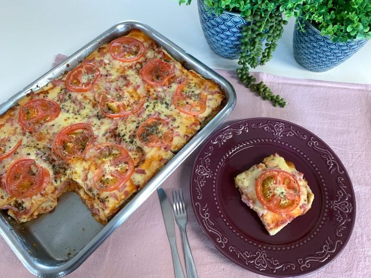

Bauru com pão de forma (12 porções)

50 minutos
Voltar
Ingredientes:
- 4 colheres de sopa de maionese
- 2 pacotes de pão de forma
- Molho de tomate a gosto
- 400 gramas de presunto
- 450 gramas de mussarela ralada
- Tomate cortado em rodelas
- Orégano a gosto
Como fazer o Bauru:
- Reúna todos os ingredientes do bauru de forno com pão de forma
- Pegue uma forma e junte-a com maionese
- Na forma untada, acrescente uma camada de pão de forma, de modo a forrar todo o fundo do recipiente
- Passe molho de tomate sobre a camada de pão de forma
- Por último, faça uma camada de presunto, outra de queijo minas padrão, coloque as rodelas de tomate e salpique orégano a gosto
- Repita o processo mais uma vez e deixe a última camada com presunto, queijo minas padrão, tomate e orégano
- Leve para assar, em forno a 180ºC, até o queijo minas derreter. Sirva e bom apetite